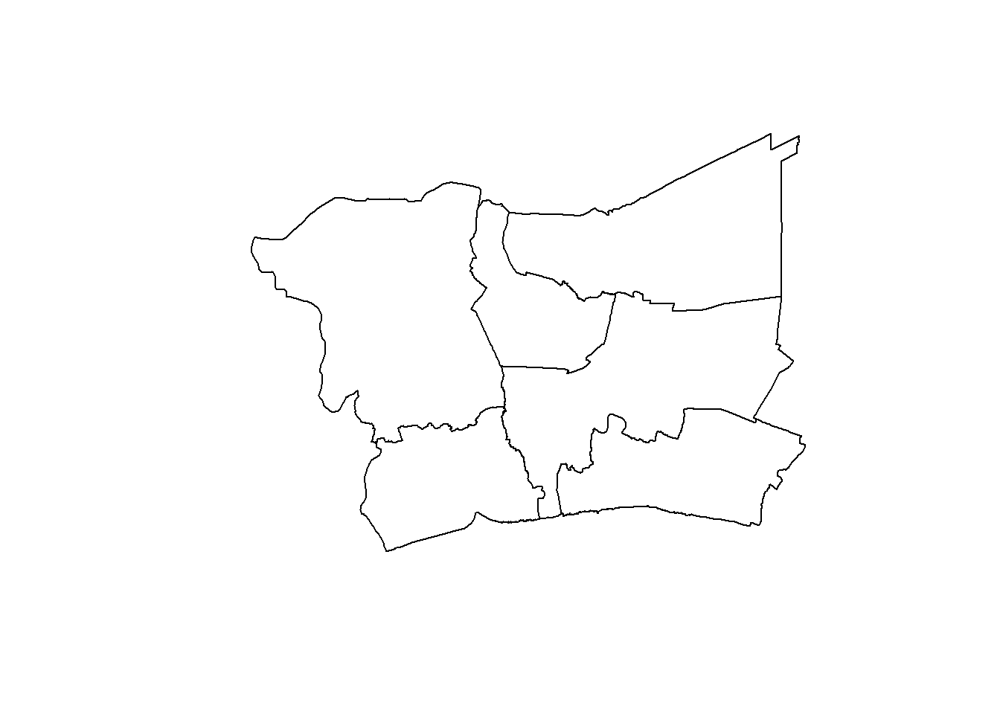
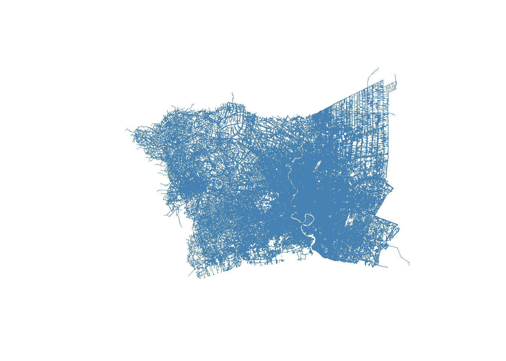
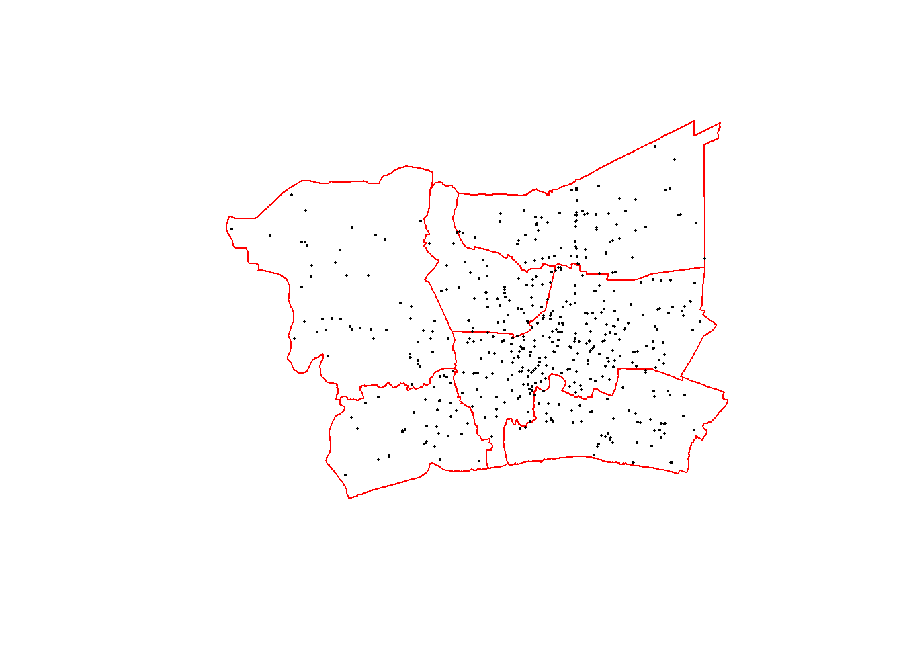

pacman::p_load(sf, tmap, tidyverse, rvest, terra, spatstat, sparr, stpp, spNetwork, spdep, knitr, sfdep)Geospatial Analytics For Public Safety
Load Packages
Import Data
Load data
Cite data sources
Geo Boundaries
Kaggle
adm1 <- st_read("data/geospatial/ADM1.geojson")Reading layer `ADM1' from data source
`C:\Users\chert\Desktop\cherteosg\ISSS626-GSA\Take-Home_Ex1\data\geospatial\ADM1.geojson'
using driver `GeoJSON'
Simple feature collection with 77 features and 5 fields
Geometry type: MULTIPOLYGON
Dimension: XY
Bounding box: xmin: 97.34381 ymin: 5.612851 xmax: 105.6368 ymax: 20.46483
Geodetic CRS: WGS 84adm2 <- st_read("data/geospatial/ADM2.geojson")Reading layer `ADM2' from data source
`C:\Users\chert\Desktop\cherteosg\ISSS626-GSA\Take-Home_Ex1\data\geospatial\ADM2.geojson'
using driver `GeoJSON'
Simple feature collection with 928 features and 5 fields
Geometry type: MULTIPOLYGON
Dimension: XY
Bounding box: xmin: 97.34336 ymin: 5.613038 xmax: 105.637 ymax: 20.46507
Geodetic CRS: WGS 84roads <- st_read("data/geospatial/Roads.geojson")Reading layer `hotosm_tha_roads_lines_geojson' from data source
`C:\Users\chert\Desktop\cherteosg\ISSS626-GSA\Take-Home_Ex1\data\geospatial\Roads.geojson'
using driver `GeoJSON'
Simple feature collection with 2833401 features and 14 fields
Geometry type: MULTILINESTRING
Dimension: XY
Bounding box: xmin: 97.33814 ymin: 5.643645 xmax: 105.6528 ymax: 20.47168
Geodetic CRS: WGS 84print(adm1$shapeName) [1] "Roi Et Province" "Phayao Province"
[3] "Nakhon Sawan Province" "Nong Bua Lam Phu Province"
[5] "Chachoengsao Province" "Surin Province"
[7] "Nakhon Ratchasima Province" "Sukhothai Province"
[9] "Phetchaburi Province" "Chaiyaphum Province"
[11] "Phetchabun Province" "Surat Thani Province"
[13] "Si Sa Ket Province" "Nong Khai Province"
[15] "Bangkok" "Khon Kaen Province"
[17] "Loei Province" "Saraburi Province"
[19] "Uthai Thani Province" "Chumphon Province"
[21] "Kalasin" "Phitsanulok Province"
[23] "Ranong Province" "Udon Thani Province"
[25] "Sakon Nakhon Province" "Chiang Rai Province"
[27] "Tak Province" "Nakhon Pathom Province"
[29] "Lamphun Province" "Trat Province"
[31] "Ratchaburi Province" "Yasothon Province"
[33] "Phrae Province" "Yala Province"
[35] "Uttaradit Province" "Buri Ram Province"
[37] "Kamphaeng Phet Province" "Lampang Province"
[39] "Nonthaburi Province" "Bueng Kan Province"
[41] "Narathiwat Province" "Ubon Ratchathani Province"
[43] "Prachuap Khiri Khan Province" "Songkhla Province"
[45] "Phuket Province" "Ang Thong Province"
[47] "Maha Sarakham Province" "Trang Province"
[49] "Suphan Buri Province" "Sing Buri Province"
[51] "Samut Songkhram Province" "Rayong Province"
[53] "Prachin Buri Province" "Phra Nakhon Si Ayutthaya Province"
[55] "Phichit Province" "Phatthalung Province"
[57] "Phangnga Province" "Pattani Province"
[59] "Pathum Thani Province" "Nakhon Si Thammarat Province"
[61] "Nakhon Nayok Province" "Mukdahan Province"
[63] "Lopburi Province" "Krabi Province"
[65] "Chon Buri Province" "Chiang Mai Province"
[67] "Chai Nat Province" "Amnat Charoen Province"
[69] "Samut Sakhon Province" "Samut Prakan Province"
[71] "Nan Province" "Chanthaburi Province"
[73] "Nakhon Phanom Province" "Kanchanaburi Province"
[75] "Mae Hong Son Province" "Sa Kaeo Province"
[77] "Satun Province" Bangkok Greater Metropolitan Area
Filter to 6 Provinces
bkk <- adm1 %>%
filter(shapeName %in% c("Bangkok", "Nonthaburi Province", "Pathum Thani Province", "Samut Prakan Province", "Samut Sakhon Province", "Nakhon Pathom Province"))Check
nrow(bkk) [1] 6Check shape of GMA
plot(st_geometry(bkk)) 
Districts within Greater Bangkok
Check data.
names(adm2)[1] "shapeName" "shapeISO" "shapeID" "shapeGroup" "shapeType"
[6] "geometry" head(adm2)Simple feature collection with 6 features and 5 fields
Geometry type: MULTIPOLYGON
Dimension: XY
Bounding box: xmin: 98.6116 ymin: 6.471538 xmax: 104.0843 ymax: 17.82245
Geodetic CRS: WGS 84
shapeName shapeISO shapeID shapeGroup shapeType
1 Akat Amnuai 78962969B83463915016953 THA ADM2
2 Amphawa 78962969B68169586280131 THA ADM2
3 Ao Luek 78962969B54777225393770 THA ADM2
4 Aranyaprathet 78962969B18658138340114 THA ADM2
5 At Samat 78962969B71289419444255 THA ADM2
6 Bacho 78962969B22586560209583 THA ADM2
geometry
1 MULTIPOLYGON (((104.0122 17...
2 MULTIPOLYGON (((100.0144 13...
3 MULTIPOLYGON (((98.69051 8....
4 MULTIPOLYGON (((102.5356 13...
5 MULTIPOLYGON (((103.8999 15...
6 MULTIPOLYGON (((101.7093 6....adm2pt <- adm2
st_geometry(adm2pt) <- st_geometry(st_point_on_surface(adm2))
inside <- st_join(adm2pt, bkk["shapeName"], join = st_within, left = FALSE)
bkkdist <- adm2 %>% filter(shapeID %in% inside$shapeID)
nrow(bkkdist)[1] 79Roads
bkkroad <- st_filter(roads, bkk)
nrow(bkkroad) [1] 586991plot(st_geometry(bkkroad), col = "steelblue", lwd = 0.3) 
Transform to distance
EPSG:32647 is UTM Zone 47N — a coordinate system that measures position in meters instead of degrees, and it’s specifically the correct zone for Bangkok’s location.
bkk_t <- st_transform(bkk, 32647)
bkkdist_t <- st_transform(bkkdist, 32647)
bkkroad_t <- st_transform(bkkroad, 32647)Accident Data
Text is in Thai so AI was used for translation
bkkacc <- read_csv("data/aspatial/bkkdata_t.csv")head(bkkacc)# A tibble: 6 × 13
age sex nationality person_district person_province confirmed_death_date
<dbl> <chr> <chr> <chr> <chr> <chr>
1 49 Male <NA> Khanom Nakhon Si Thamm… 11/1/2024
2 59 Female <NA> Phon Khon Kaen 13/3/2024
3 15 Male <NA> Buachet Surin 30/6/2024
4 19 Male <NA> Mae Sot Tak 2/7/2024
5 44 Male <NA> Chanuman Amnat Charoen 6/7/2024
6 61 Male <NA> Wiset Chai Chan Ang Thong 6/5/2024
# ℹ 7 more variables: acc_sub_district <chr>, acc_district <chr>,
# province_of_death <chr>, acc_lat <dbl>, acc_long <dbl>, cause_code <chr>,
# vehicle_type <chr>names(bkkacc) [1] "age" "sex" "nationality"
[4] "person_district" "person_province" "confirmed_death_date"
[7] "acc_sub_district" "acc_district" "province_of_death"
[10] "acc_lat" "acc_long" "cause_code"
[13] "vehicle_type" Drop rows with missing coordinates
sum(is.na(bkkacc$acc_lat) | is.na(bkkacc$acc_long))[1] 9516bkkacc <- bkkacc %>% filter(!is.na(acc_lat), !is.na(acc_long))Convert to sf points (currently WGS84 lat/long)
bkkacc_sf <- st_as_sf(bkkacc, coords = c("acc_lat", "acc_long"), crs = 4326)Reproject to match your other layers (UTM 47N)
bkkacc_t <- st_transform(bkkacc_sf, 32647)Clip to Greater Bangkok boundary
bkkacc_g <- st_filter(bkkacc_t, bkk_t)accident records inside your study area
nrow(bkkacc_g)[1] 530names(bkkacc_g) [1] "age" "sex" "nationality"
[4] "person_district" "person_province" "confirmed_death_date"
[7] "acc_sub_district" "acc_district" "province_of_death"
[10] "cause_code" "vehicle_type" "geometry" plot(st_geometry(bkk_t), border = "red")
plot(st_geometry(bkkacc_g), col = "black", pch = 16, cex = 0.3, add = TRUE)